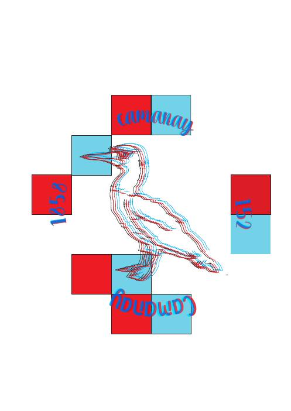
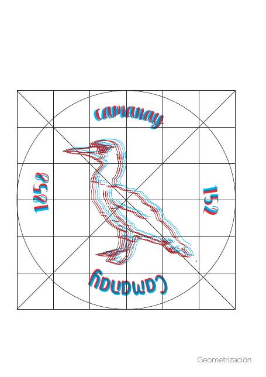
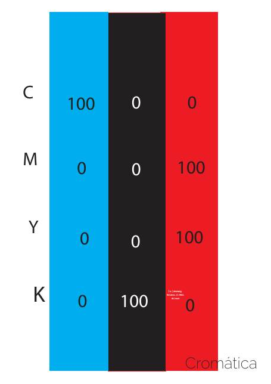
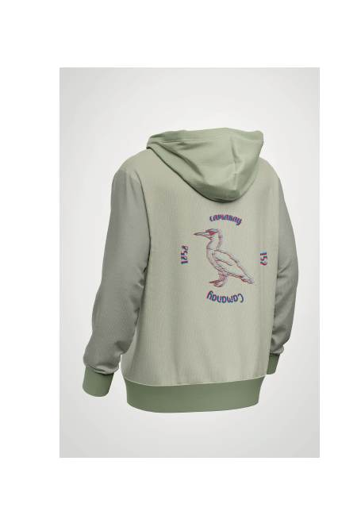
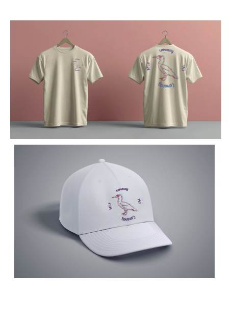
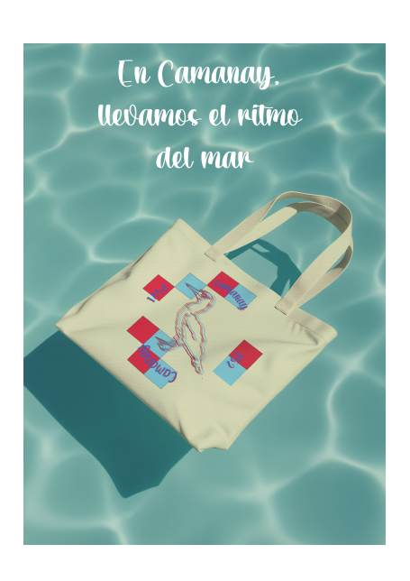
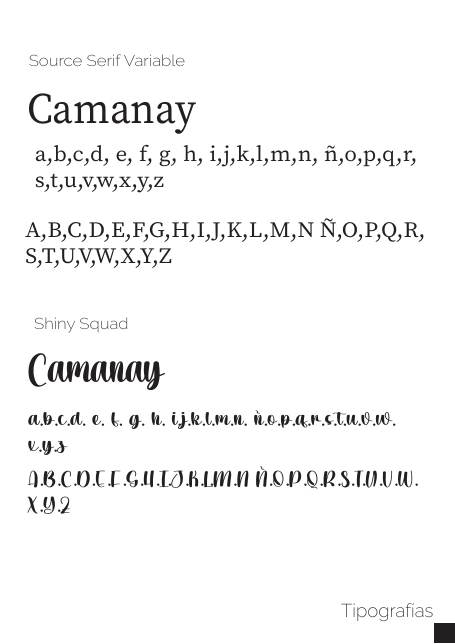

Marca de ropa
Camanay
Marca que nace de la autenticidad, la libertad y la energía del piquero de patas azules. Incluye retícula del isotipo, guía de marca y mockup de buzo.
IllustratorPhotoshop




